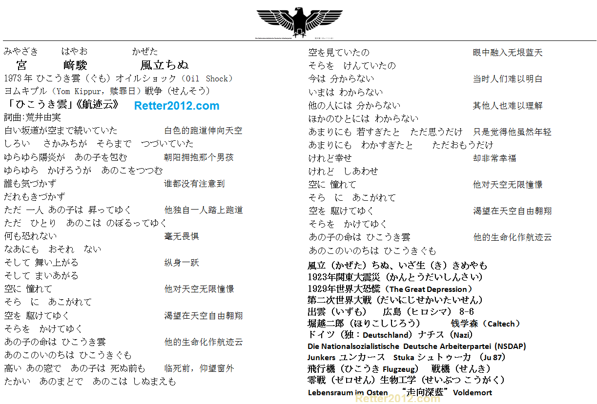

返回主页
宫崎骏《航迹云》

二郎去德国Junkers Flugzeug und Motorenwerke AG (JFM) 学飞，钱学森去美国Caltech也是 学飞。孙悟空跟斗云要 飞，伊卡洛斯（Icarus）能 飞，Musk也要 飞，就连熊二都想 飞！
宫崎骏的老爸为零战生产部件，当过厂长。宫崎骏本人就是军航迷。起的风，莫不是“东风（DF）”？或者Typhoon/Hurricane/津波？
The Croods（疯狂原始人）
今天我要讲个克里斯皮熊的故事。
很久很久以前，这只小熊还活着，它之所以活着是因为他听爸爸的话，一成不变的生活在恐惧和黑暗里，所以它很快乐。
可是克里斯皮有一个可怕的缺点，他有很强的 好奇心！
有一天它呆在树洞里，这只好奇的小熊想要爬到树顶上去，它刚刚爬到树顶上，就看到一个新的东西！然后…
就死了！！！
version:1.0; jobnet@188.com © retter2012.com